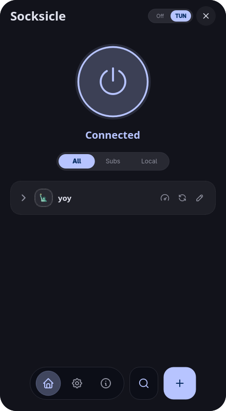
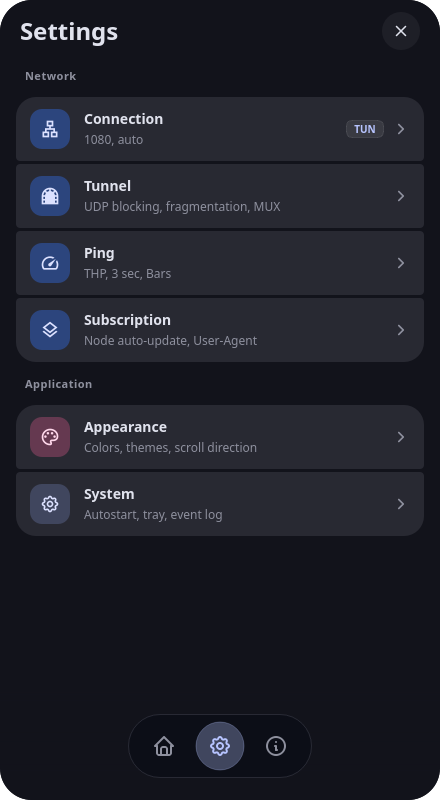
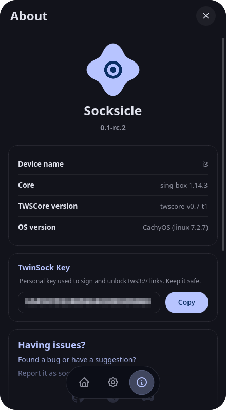

Windows
Installer or portable, both x64.
Desktop GUI built on PySide6 with native Material 3. Supports Shadowsocks, VLESS, VMess, Hysteria 2, TUIC and system TUN. Connects directly to your own nodes without accounts or third-party servers.
Open source under MIT license.

Links are parsed, validated and dispatched to the engine best suited for them.
| Protocol | Engine | Notes |
|---|---|---|
| Shadowsocks | sing-box, Xray | SIP003 plugins are parsed but not forwarded to cores |
| VLESS | sing-box, Xray | XHTTP transport requires Xray |
| VMess | sing-box, Xray | TCP, WebSocket and gRPC |
| Hysteria 2 | sing-box | Obfs needs both the type and the password |
| Trojan | sing-box | Standard TLS transport |
| TUIC | sing-box | TUIC v5 |
Accepted links ss:// vless:// vmess:// hysteria2:// hy2:// trojan:// trojan-go:// tuic:// tws3://
Home, settings and about.


Fast and simple setup across Linux and Windows.
Downloads the binary, sets up desktop integration, and configures permissions automatically:
curl -fsSL https://iwtsd.online/socksicle/get | bash
Requires Windows 10/11 x64. Bundles sing-box and wintun driver for system-wide TUN support.
Administrator privileges are required only for enabling TUN mode.
Requires Python 3.10+ and external sing-box or Xray binaries:
git clone https://github.com/socksicle/desktop.git
cd desktop
python -m venv .venv
source .venv/bin/activate # Windows: .venv\Scripts\Activate.ps1
pip install -e ".[dev]"
python main.pyVersion 0.1.1 for Windows x64 and Linux x86_64. Prebuilt releases bundle sing-box.
Installer or portable, both x64.
AppImage, no install step.
Python 3.10 or newer.
TUN mode needs Administrator on Windows (wintun.dll ships with the build) and pkexec on Linux. Xray is optional: put it in bin/xray/ or your PATH.
Everything you need to know about Socksicle.
Yes. Socksicle is MIT licensed and the source is on GitHub. There is no paid tier and no account. sing-box and Xray are separate projects with their own licences.
If your provider gives you an HTTPS URL that returns plain text, Base64 or SIP008 JSON, yes. Import it once and Socksicle refreshes nodes on a schedule with SSRF protection.
No. Release builds bundle sing-box. Xray is optional: install it into bin/xray/ or your PATH if you need XHTTP or want to compare engines.
Administrator privileges on Windows and pkexec on Linux, because the app has to create a virtual network adapter. SOCKS5 mode needs neither.
Locally. %APPDATA%\socksicle\ on Windows and ~/.config/socksicle/ on Linux. Nothing is uploaded. The privacy policy ships with the app and lives in the repository.
Not yet. macOS is explicitly unsupported in this repository, and there is no build for it.
Support Socksicle development with any coin.